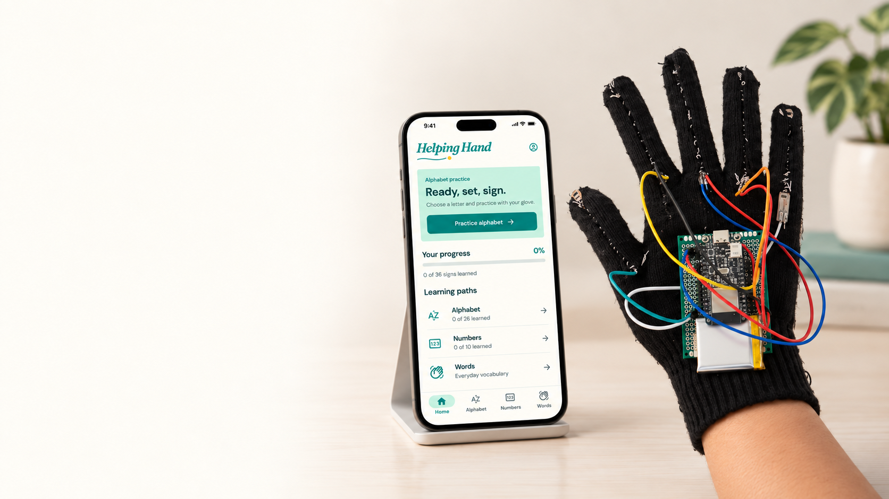
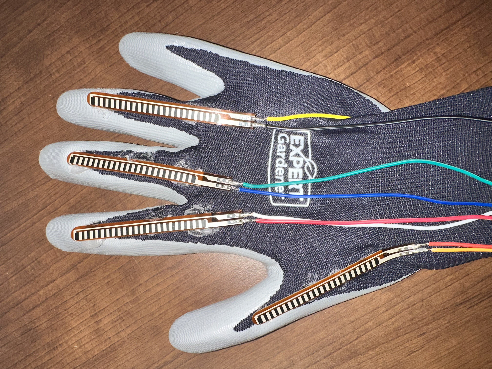
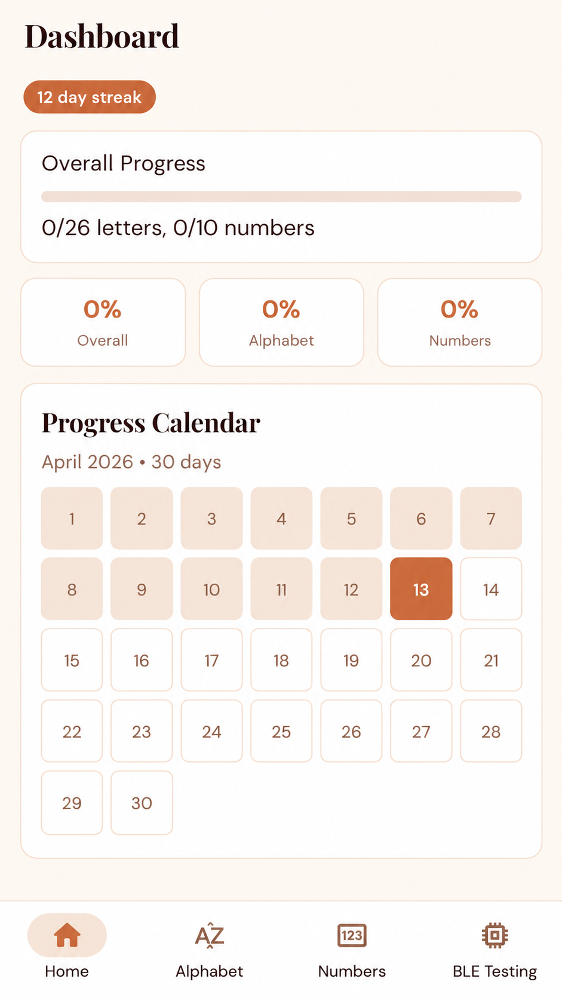
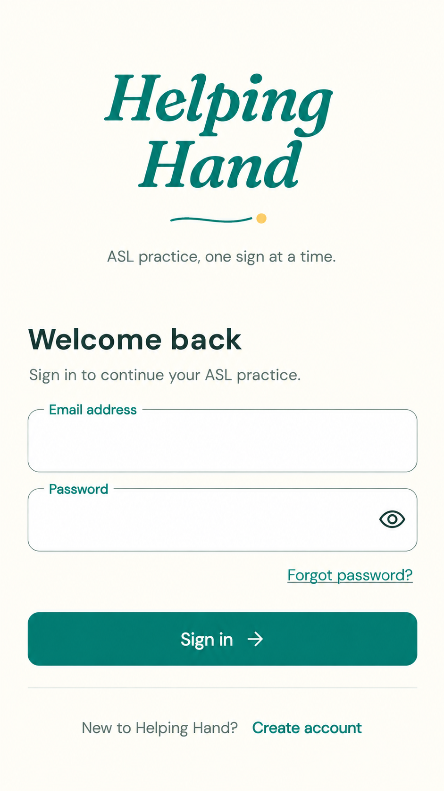
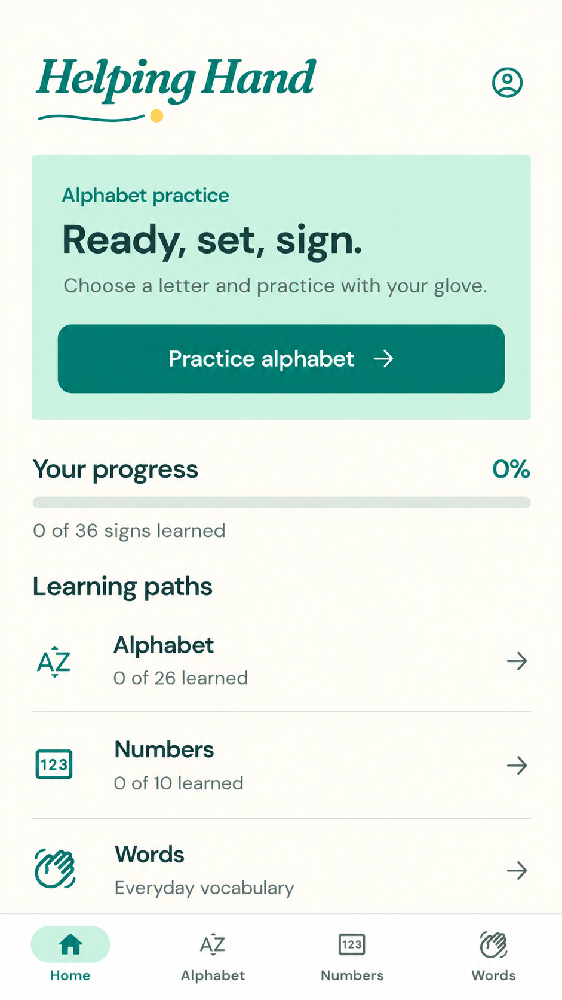
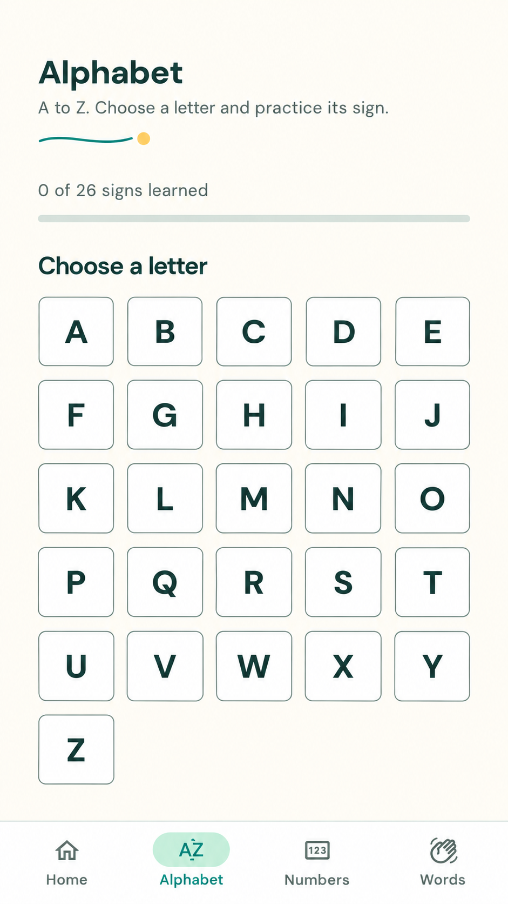
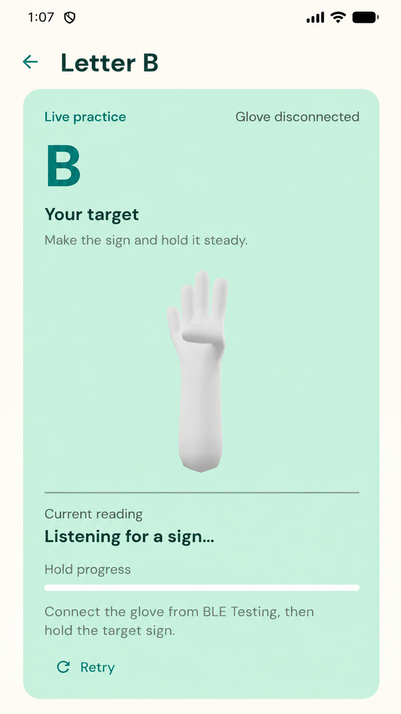
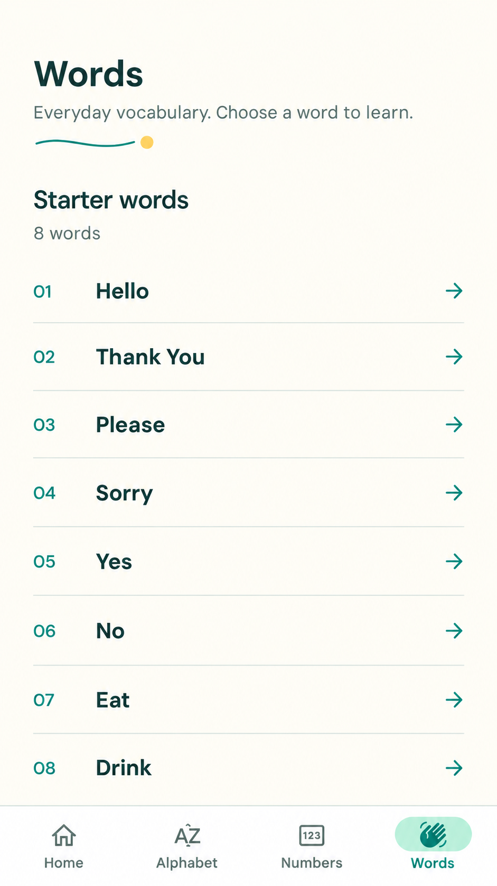
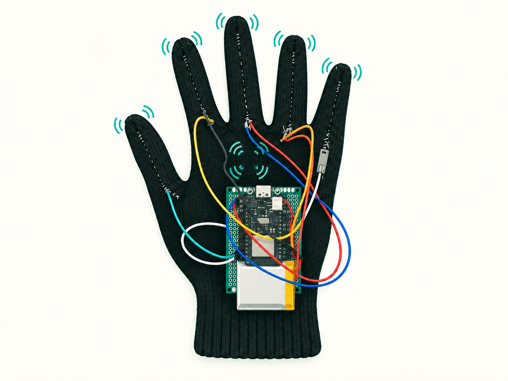

Beta build · October 6, 2026
Helping
Hand
A Wearable ASL
Learning System
Speaker: TBD · 15 seconds
Introduce Helping Hand as a wearable-assisted ASL learning system. Name the four team members. The intro is a generated product visualization based on supplied references.
The problem
Learning ASL needs
feedback.
of deaf children are born
to hearing parents.
Books and videos show the sign.
2D examples cannot assess your hand position.
No live correction from the reference alone.
Speaker: TBD · 25 seconds
NIDCD reports that more than 90% of deaf children are born to hearing parents, citing Mitchell and Karchmer (2004). This motivates accessible opportunities for families to learn ASL; it does not measure ASL proficiency or prove the effectiveness of our glove. Books and ordinary prerecorded videos teach through observation but do not measure the learner's own hand position or provide personalized live correction by themselves. Helping Hand aims to add sensor-based feedback. Do not generalize this gap to every app or instructor. Source verified October 5, 2026; see sources.md.
Our solution
Wear. Sign. Get feedback.
Sensor glove
Flex + IMU
ESP32
Capture readings
BLE
Stream packets
Flutter app
Recognize signs
Feedback
Guide practice
Speaker: TBD · 30 seconds
Flex sensors capture finger bending; IMU readings capture motion/orientation. ESP32 samples and sends BLE packets to Flutter. The app processes readings and displays practice feedback. Tactile feedback is a future addition. Current hardware photo slots are placeholders.
Alpha vertical slice
The first complete pipeline


Sensor capture
Finger bend + motion readings
Wireless streaming
Glove → BLE → app
Static classification
36-class TFLite baseline
Speaker: TBD · 25 seconds
Alpha established the sensor-to-app vertical slice and static TFLite baseline. These are supplied historical alpha materials, not fresh beta validation. The previous deck's 78%/94% figures are omitted because evaluation context has not been supplied. Preserve the static model as a regression baseline while adding words.
The beta app
A clearer path to practice
Firebase sign-in · dedicated practice pages · account-specific progress





Speaker: TBD · 40 seconds
Show sign-in, learning paths, target selection, and dedicated practice routes. Firebase accounts own static progress. Words opens beginner vocabulary pages. The supplied practice screen is disconnected, not a successful recognition result. These screens do not establish dynamic recognition validation or word completion.
Dynamic word recognition
Recognizing words with a sequence model
One sensor snapshot → static class
Sensor window → word prediction
Sensor window
Time × sensor features
1D CNN
Local sensor patterns
Convolution + poolingGRU
Information across time
Recurrent sequence memoryDense + softmax
Word probabilities
CNN-LSTM · comparison candidate
Demo target · 3–4 beginner words
Speaker: TBD · 35 seconds
Alpha's MLP classifies a sensor snapshot. For beta words, use a time window: a 1D CNN extracts local patterns; a GRU carries information across time; dense/softmax layers predict word probabilities. The diagram summarizes a candidate, omitting normalization, dropout, and intermediate implementation details for clarity. Research recommends CNN-GRU first, comparing CNN-LSTM. Current backend builders support both and a TCN candidate; this does not establish a selected trained/deployed model. Hello and 3–4 words remain provisional demo scope. Traces/output are illustrative, with no measured accuracy claimed. REQUIRED FOLLOW-UP: update this slide after training/model selection and integration to match the actual architecture, vocabulary, preprocessing, and measured device performance. See CONTENT_REVIEW.md.
Helping Hand in action
LIVE
DEMO!!!
Speaker/demo operator: TBD · 90 seconds
Use the actual glove/app live, as confirmed with instructors. Demonstrate a rehearsed static target, then Hello and the actual available feedback. Set up login and connection in advance. If recognition fails, explain what happened and demonstrate remaining live functions. Do not substitute video for live use.
Current project state
Beta features and acceptance rules
Core experience
- 36-class static baseline
- Firebase accounts + lessons
- Account-scoped static progress
Dynamic words
- 3–4-word demo target
- Sequence-model comparison
- Orientation + signer robustness
Tactile guidance
- 10 planned piezo elements
- Error-to-vibration mapping
- Calibration + user testing
≥80%Confidence
≥750 msStable matching hold
≥5Matching packets
≤250 msGap between packets
Speaker: TBD · 25 seconds
Separate implemented static software, sequence-model development, and planned haptics. Static progress requires the correct target label, confidence at least 80%, a stable hold of at least 750 ms, at least five matching packets, and packet gaps no greater than 250 ms. These are implementation thresholds from StablePredictionTracker, not measured accuracy or latency. They do not apply to dynamic words. Current physical-device route/BLE, Firebase end-to-end, and external-user beta procedures remain Not run in the repository notes; update only with recorded evidence. Confirm the actual dynamic demo build before presenting.
Next milestone
Feel what needs correcting.
5 + 5
X pattern + one on each finger
Planned piezo feedback for
incorrect positioning.
Placement, error mapping, and tactile response need calibration.

Speaker: TBD · 35 seconds
Plan five piezo elements in an X pattern and one per finger, ten total as understood. Goal: indicate incorrect positioning and degree of deviation. Confidence alone is not a positional error estimate; establish a calibrated deviation measure and feedback mapping. Validate tactile response and drivers. Artwork is conceptual, not an exact mounting schematic. Dates are proposed and require team review; the final deadline is unknown. Explain mount/wire → calibrate → recognition variation trials → user tests/polish.
Helping Hand
Thank you.
Questions?
Practice with feedback.
Next: guidance you can feel.
All speakers available · 10-second closing + 1–2 minutes Q&A
Connect the current wearable/app experience with corrective tactile guidance. Answer using actual implementation/evidence. Prepare for questions on vocabulary, training data, orientation, BLE, progress, and haptic calibration.